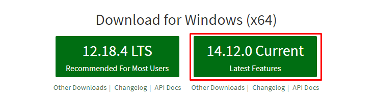

EthStonksWhen is a command line application designed to alert the user when ETH (a cryptocurrency) reaches a certain value.
After installing Node.js, and unzipping the file, run the following command in a windows shell:
npm i chalk node-notifier node-crypto-api prompt-sync && launch
Node.js?NOTE: Make sure to click "Add to PATH" during the installation, so that you can use the command globally.

It is known that EthStonksWhen will continuously send notifications more than once. This may be super annoying for some users, so DM me (Hextanium#5890) to recieve a copy the non-spam-notifications.